MCP 服务
SQLBot 支持通过 MCP 进行服务端图表渲染与智能问数处理。
1 服务配置¶
SQLBot MCP Server 默认监听端口为 8001，使用 SSE 协议进行通信。基本配置如下：
{
"sqlbot_mcp": {
"url": "http://<your-server-ip>:8001/mcp", // 将 IP 替换为部署机器的地址
"transport": "sse"
}
}
SQLBot 运行方式不同，对应的 MCP 参数 SERVER_IMAGE_HOST 的配置方式不同，注意该参数中的 IP 是 SQLBot 服务器的 IP 地址，端口是 MCP 服务的端口，默认情况下，服务端口是 8001（切记不是 3000 端口）。另外，注意跨域 、https 、http协议安全等可能导致图片无法加载。
-
安装包安装方式
- 确认 SQLBot 的 .env 配置文件(默认位置 /opt/sqlbot/.env)中的 SQLBOT_SERVER_IMAGE_HOST：
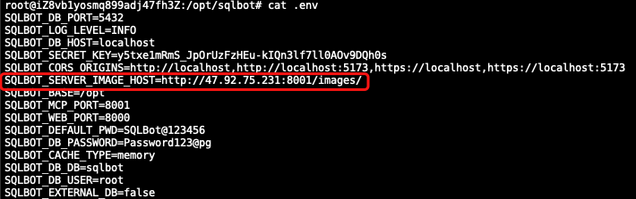
-
确认 SQLBot 运行配置文件(默认位置 /opt/sqlbot/conf/sqlbot.conf)中的 SERVER_IMAGE_HOST：
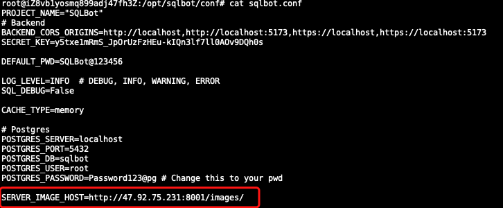
若参数并非实际的 IP 和端口，请修改完上述两个配置参数后，重启一下 SQLBot 服务：
sctl restart
- 确认 SQLBot 的 .env 配置文件(默认位置 /opt/sqlbot/.env)中的 SQLBOT_SERVER_IMAGE_HOST：
-
1Panel 运行方式
- 确认相关参数是否正确，若与实际情况部分，请修改后重启 SQLBot 服务：
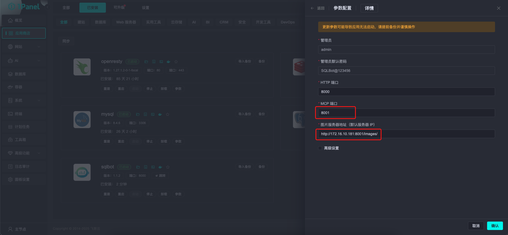
- 确认相关参数是否正确，若与实际情况部分，请修改后重启 SQLBot 服务：
- docker 一键运行方式
- 若之前运行方式没有加上 SERVER_IMAGE_HOST 参数，或者参数值不对，则停止 SQLBot 服务并删除容器
- 修改 MCP 运行参数 SERVER_IMAGE_HOST，注意将 IP 和端口替换成自己的实际 IP 和端口：
docker run -d \ --name sqlbot \ --restart unless-stopped \ -p 8000:8000 \ -p 8001:8001 \ -e SERVER_IMAGE_HOST=http://47.92.75.231:8001/images/ \ -v data/sqlbot/excel:/opt/sqlbot/data/excel \ -v ./data/sqlbot/file:/opt/sqlbot/data/file \ -v data/sqlbot/images:/opt/sqlbot/images \ -v data/sqlbot/logs:/opt/sqlbot/logs \ -v data/postgresql:/var/lib/postgresql/data \ --privileged=true \ dataease/sqlbot
- docker-compose 一键运行方式
- 若之前运行方式没有加上 SERVER_IMAGE_HOST 参数，或者参数值不对，则停止 SQLBot 服务并删除容器
- 修改 docker-compose.yml 文件中的 MCP 参数 SERVER_IMAGE_HOST，注意将 IP 和端口替换成自己的实际 IP 和端口：
services: sqlbot: image: dataease/sqlbot:v1.1.0 container_name: sqlbot restart: always networks: - sqlbot-network ports: - 8000:8000 - 8001:8001 environment: # Database configuration POSTGRES_SERVER: localhost POSTGRES_PORT: 5432 POSTGRES_DB: sqlbot POSTGRES_USER: root POSTGRES_PASSWORD: Password123@pg # Project basic settings PROJECT_NAME: "SQLBot" DEFAULT_PWD: "SQLBot@123456" # MCP settings SERVER_IMAGE_HOST: http://47.92.75.231:8001/images/ # Auth & Security SECRET_KEY: y5txe1mRmS_JpOrUzFzHEu-kIQn3lf7ll0AOv9DQh0s # CORS settings BACKEND_CORS_ORIGINS: "http://localhost,http://localhost:5173,https://localhost,https://localhost:5173" # Logging LOG_LEVEL: "INFO" SQL_DEBUG: False volumes: - data/sqlbot/excel:/opt/sqlbot/data/excel - data/sqlbot/file:/opt/sqlbot/data/file - data/sqlbot/images:/opt/sqlbot/images - data/sqlbot/logs:/opt/sqlbot/logs - data/postgresql:/var/lib/postgresql/data networks: sqlbot-network:
2 MCP 工具说明¶
SQLBot 的 MCP Server 提供两个内置工具：mcp_start 和 mcp_question，分别用于初始化对话和提交问题。
2.1 mcp_start 工具¶
用于启动一次智能问数对话，获取 access_token 和 chat_id。
| 参数名 | 说明 |
|---|---|
| username | SQLBot 用户名 |
| password | SQLBot 用户密码 |
返回示例：
{
"code": 0,
"data": {
"access_token": "<JWT_TOKEN>",
"chat_id": 1330
},
"msg": null
}
- chat_id：唯一对话上下文 ID，后续问数保持一致可维持上下文状态。
2.2 mcp_question 工具¶
用于在已初始化的问数上下文中提交用户问题，并返回对应 SQL、可视化结果及图表图片地址。
| 参数名 | 说明 |
|---|---|
| token | mcp_start 返回的 access_token |
| chat_id | mcp_start 返回的 chat_id |
| question | 用户的提问问题 |
返回结果示例（Markdown 格式）：
```sql SELECT "s"."区域", COUNT(*) AS "count" FROM "public"."Sheet1_c27345b66e" "s" GROUP BY "s"."区域" ORDER BY "s"."区域" ``` | 区域 | 数量 | |:-----|-----:| | 东区 | 269 | | 北区 | 321 | | 南区 | 275 | | | 4 | ### generated chart picture 
2.3 对接流程说明¶
对接步骤：
- 步骤 1：调用 mcp_start 工具。 获取初始化问数所需的 access_token 和 chat_id。
- 步骤 2：调用 mcp_question 工具使用上一步返回的 access_token 和 chat_id，传入用户自然语言问题 question，提交问题请求。
建议：
- 每次调用 mcp_start 会生成新的 chat_id；
- 对话过程中保持 chat_id 一致，才能维持上下文；
- 建议缓存 access_token 和 chat_id，在一次对话中只调用一次 mcp_start。
3 使用示例¶
3.1 MaxKB 集成示例¶
步骤⼀： 创建或进入一个高级编排类型的应用。
步骤二： 在「基本信息」里添加两个用户输入，分别是 username 和 password，添加两个会话变量，分别是 sqlbot_token 和 sqlbot_chat_id
步骤三： 添加条件判断，在开始节点后添加条件分支（IF）。判断条件：会话变量>sqlbot_token 是否为空。为空：执行登录逻辑，添加 MCP 调用，调用 MCP 工具 mcp_start。
步骤四： 配置 MCP 登录配置：
添加 MCP 调用节点
- MCP Server Config 服务配置：
{ "sqlbot_mcp": { "url": "http://<SQLBot_MCP_IP>:8001/mcp", "transport": "sse" } } - 工具配置： 点击「获取工具」，选择 mcp_start
- 工具参数配置： username 从全局变量里选择 username；password 从全局变量里选择 password。
步骤五： 配置自定义工具：
- MCP 调用后添加「自定义工具」。
MCP 工具返回包含 sqlbot_chat_id 和 sqlbot_token 的 JSON。添加输入参数，将 MCP 调用结果赋值给参数“arg1”。此外，再添加工具节点（Python）来解析 JSON，工具内容：
import json def main1(arg1): json_obj = json.loads(data[0]) return {"token":json_obj["data"]["sqlbot_token"], "sqlbot_chat_id":json_obj["data"]["chat_id"]}
步骤六： 变量赋值 添加变量赋值节点，将 sqlbot_chat_id 和 sqlbot_token 存储为会话变量，供后续 MCP 调用使用。
步骤七： 问数 MCP 调用配置 添加 MCP 调用节点，配置问数调用
- MCP Server Config 服务配置：
{ "sqlbot_mcp": { "url": "http://<SQLBot_MCP_IP>:8001/mcp", "transport": "sse" } } - 工具配置： 点击「获取工具」，选择 mcp_question
- 工具参数配置： question 选择「开始>用户问题」，chat_id 选择「会话变量>sqlbot_chat_id」，token 选择「会话变量>sqlbot_token」。
步骤八：在流程末尾添加指定回复节点，将 MCP 的输出结果作为回复内容。输入有效的 username 与 password 测试登录及 MCP 功能调用是否正常。
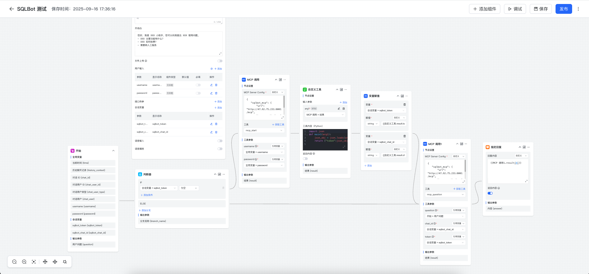
3.2 Dify 集成示例¶
步骤⼀： 进入需要配置的工作空间，创建一个 Chatflow 类型的应用；
步骤二： 在开始节点中定义输入变量： username（必填） 、password（必填）；
步骤三： 添加会话变量 chat_id（Number）和 access_token（String）；
步骤四： 添加条件分支，在开始节点后添加条件分支（IF）。判断条件：access_token 是否为空。为空：执行登录逻辑，调用 MCP 工具 mcp_start；
步骤五： 在 marketplace 中搜索 “MCP”，添加工具 “MCP SSE / StreamableHTTP”，添加 MCP 调用。工具名称为 mcp_start
配置 MCP 工具参数（以 mcp_start 为例）：
- 输入参数：
{ "username": "{{开始节点的username}}", "password": "{{开始节点的password}}" } - MCP 服务配置：
{ "sqlbot_mcp": { "url": "http://<SQLBot_MCP_IP>:8001/mcp", "transport": "sse" } }
步骤六：解析 chat_id 和 access_token
-
添加输入变量 “arg1”，选择 “mcp_start 的 text”
-
MCP 工具返回包含 chat_id 和 access_token 的 JSON。解析返回值，添加 代码执行 节点（Python）来解析 JSON：
import json def main(arg1: str) -> dict: json_obj = json.loads(arg1) return { "chat_id": json_obj["data"]["chat_id"], "access_token": json_obj["data"]["access_token"] } -
添加输出变量 access_token（String）和 chat_id（Number）
步骤七： 变量赋值
添加变量赋值节点，将 chat_id 和 access_token 存储为全局变量，供后续 MCP 调用使用。
步骤八： 执行 MCP 调用
调用 MCP 工具 mcp_question，工具名称为 mcp_question
- 参数设置
{ "chat_id":{{#conversation.chat_id#}}, "question":"{{#sys.query#}}", "token":"{{#conversation.access_token#}}" } -
执行后续 MCP 业务调用
{ "sqlbot_mcp": { "url": "http://<SQLBot_MCP_IP>:8001/mcp", "transport": "sse" } }
步骤九：在流程末尾添加回答节点，将 MCP 返回的内容回复给用户。输入有效的 username 与 password 测试登录及 MCP 功能调用是否正常。
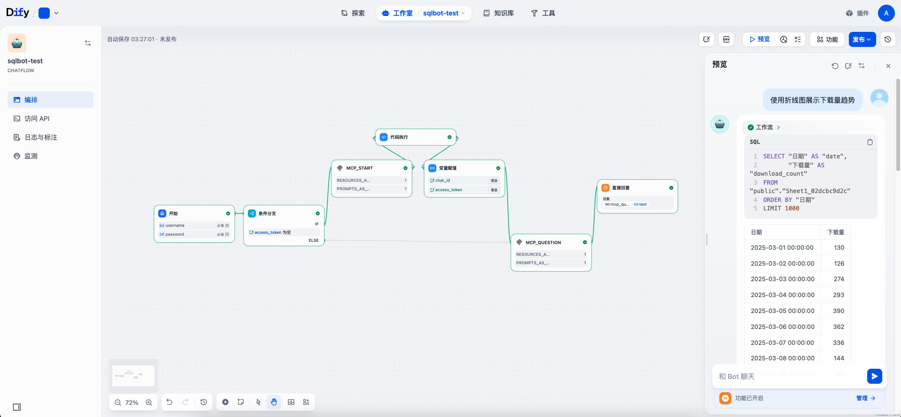
3.3 Coze 集成示例¶
方式一：
步骤⼀：进入工作空间，创建一个新的应用或进入已有应用。
步骤二：在开始节点中设置输入变量： username（必填） 、password（必填）；
步骤三：在开始节点后添加文本处理节点（文本处理节点用于字符串拼接），传入 username 和 password，编辑表达式如下：
{"username":"{{String1}}","password":"{{String2}}"}
-
输入变量：文本处理节点输出
-
工具名称：mcp_start
-
SSE URL：
http://SQLBot_MCP_IP:8001/mcp
步骤五：MCP 将返回包含 chat_id 和 access_token 的 JSON。添加 Python 代码节点，解析 MCP 返回的 JSON，示例代码如下：
import json
def main(args) -> dict:
# 从args获取params字典
params = args.params
# 从params字典获取input值（这是我们需要的JSON字符串）
input_json_str = params.get('input')
# 解析JSON字符串
json_obj = json.loads(input_json_str)
# 获取data部分
data = json_obj.get('data')
# 提取所需字段
chat_id = data.get('chat_id')
access_token = data.get('access_token')
return {
"chat_id": chat_id,
"access_token": access_token
}
步骤六：添加文本处理节点，将代码节点返回的 access_token 和 chat_id 与开始节点的 question 变量进行拼接，表达式如下：
{"token":"{{String1}}","chat_id":"{{String2}}","question":"{{String3}}"}
-
输入变量：文本处理节点输出
-
工具名称：mcp_question
-
SSE URL：http://
:8001/mcp
步骤八：在结束节点将 MCP 返回的内容回复给用户。输入有效的 username、password 以及 question，即可测试登录及 MCP 功能调用是否正常。
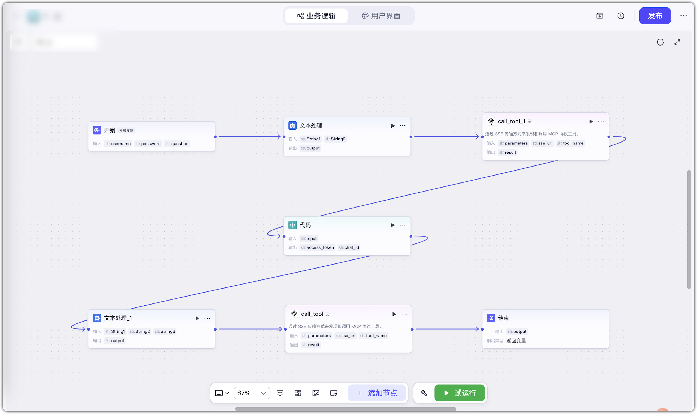
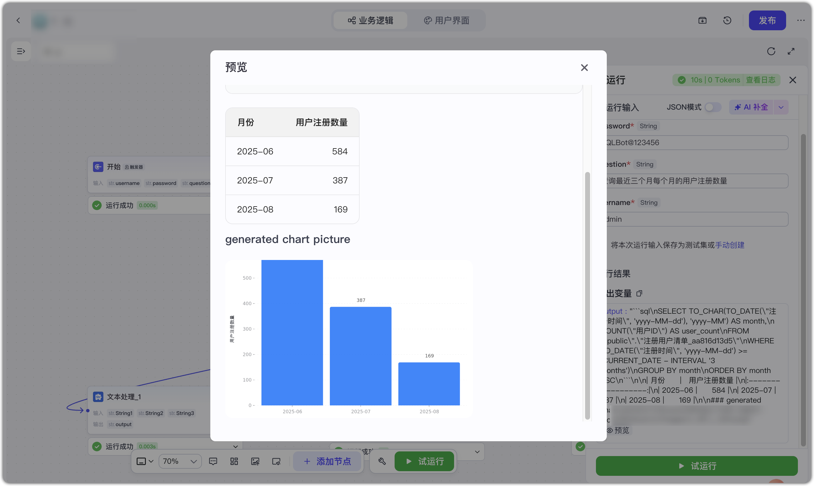
方式二：
步骤⼀：进入工作空间，创建一个新的应用或进入已有应用。
步骤二：定义输入变量。在开始节点中设置以下必填输入变量：username、password、question。
步骤三：添加大模型节点，选择合适的模型。添加技能：MCP Compatible/call_tool。配置输入参数如下：
{
"sqlbot_mcp": {
"uri": "http://<SQLBot_MCP_IP>:8001/mcp",
"transport": "sse"
}
}
# 回答要求：
按需调用 mcp_start 和 mcp_question 工具获取信息回答问题。
mcp_start 账号密码：
{{username}}
{{password}}
工具调用逻辑：
首先调用 mcp_start 工具，获取 access_token 和 chat_id ，帮我记住这两个参数，之后不要重复调用 mcp_start，直接使用即可；然后再调用 mcp_question 工具，其中 token 和 chat_id 参数是调用 mcp_start 工具返回，question 是用户提问。
# 用户提问：
{{question}}
# 输出要求
- 如果 mcp_question 中有图片，请直接返回图片
- 请将 mcp_question 的执行结果中的数据、SQL以及图片内容展示
- 请将 mcp_question 的执行过程在结尾进行总结
# 限制
- 不要输出MCP详细执行过程
- 生成内容不要放在 mcp_question 执行过程中
- 严格按照输出要求输出内容，不要输出MCP调用过程
步骤四：添加结束节点，将大模型返回的内容回复给用户。输入有效的 username 与 password 以及输入 question，测试登录及 MCP 功能调用是否正常。
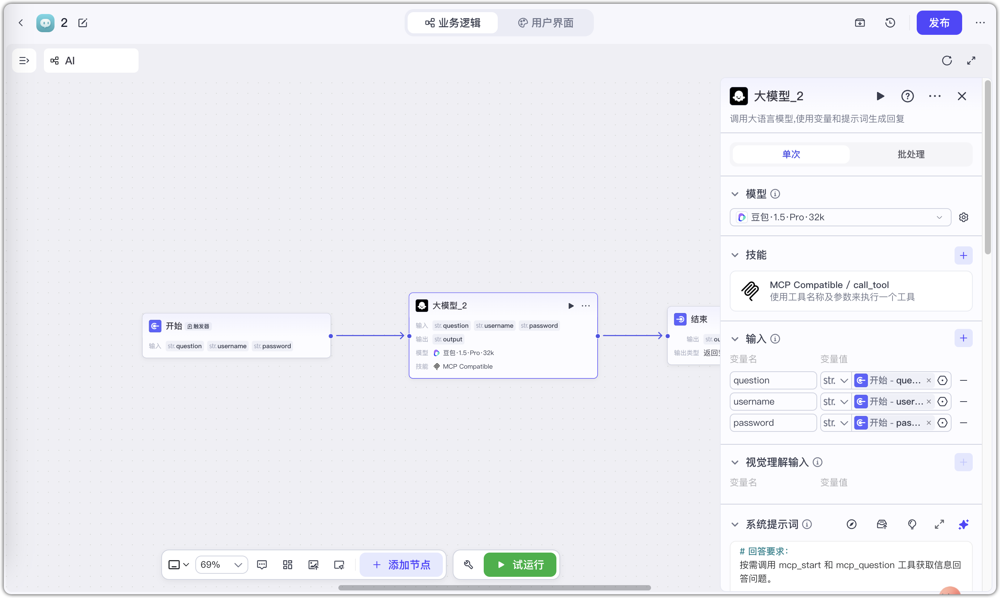
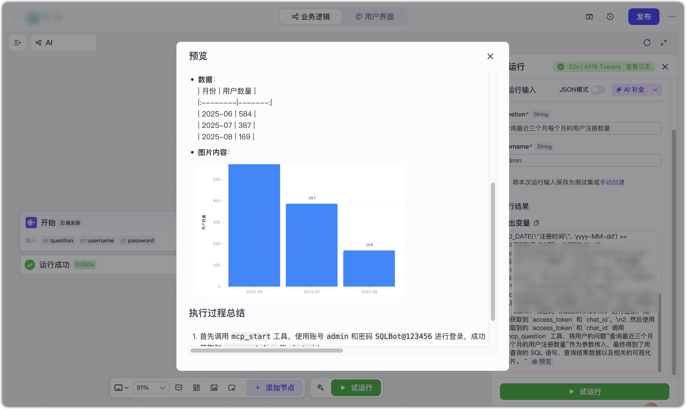
3.4 n8n 集成示例¶
方式一：
步骤⼀：进入 My project，创建或进入一个 workflow。
步骤二：添加表单触发器节点，节点中定义表单元素： username（必填） 、password（必填）、question（必填）。
步骤三：添加 AI Agent 节点，编辑提示词，提示词参考如下：
# 回答要求：
按需调用 mcp_start 和 mcp_question 工具获取信息回答问题。
mcp_start 账号密码：
username:{{ $json.username }}
password:{{ $json.password }}
工具调用逻辑：
首先调用 mcp_start 工具，获取 access_token 和 chat_id ，帮我记住这两个参数，之后不要重复调用 mcp_start，直接使用即可；然后再调用 mcp_question 工具，其中 token 和 chat_id 参数是调用 mcp_start 工具返回，question 是用户提问。
# 用户提问：
{{ $json.question }}
# 输出要求
- 如果 mcp_question 中有图片，请直接返回图片
- 请将 mcp_question 的执行结果中的数据、SQL以及图片内容展示
- 请将 mcp_question 的执行过程在结尾进行总结
# 限制
- 不要输出MCP详细执行过程
- 生成内容不要放在 mcp_question 执行过程中
- 严格按照输出要求输出内容，不要输出MCP调用过程
步骤五：调用 MCP Clien 工具，在 Parameters 的 Endpoint 填入 SQLBot 填入 MCP 服务地址：http://SQLBot_MCP_IP:8001/mcp。
点击【Execute workflow】输入有效的 username 与 password 以及输入 question，测试登录及 MCP 功能调用是否正常。
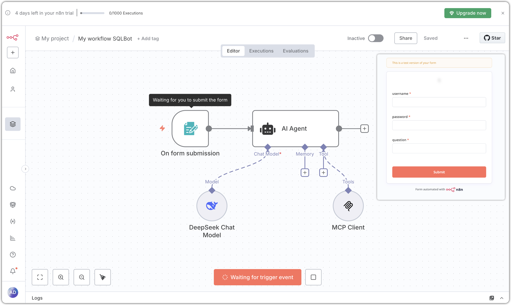
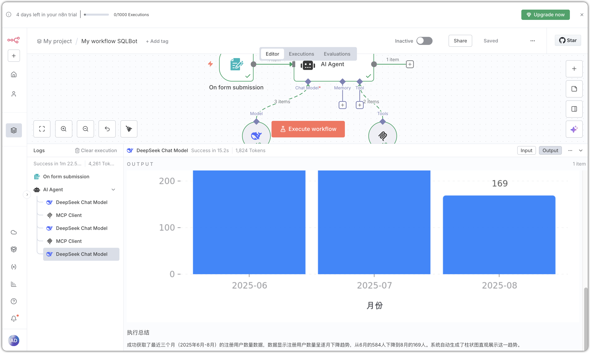
方式二：
步骤⼀：进入 My project，创建或进入一个 workflow。
步骤二：添加聊天触发器节点。
步骤三：添加 AI Agent 节点，编辑提示词，提示词参考如下：
# 回答要求：
按需调用 mcp_start 和 mcp_question 工具获取信息回答问题。
mcp_start 账号密码：
username:admin
password:SQLBot@123456
工具调用逻辑：
首先调用 mcp_start 工具，获取 access_token 和 chat_id ，帮我记住这两个参数，之后不要重复调用 mcp_start，直接使用即可；然后再调用 mcp_question 工具，其中 token 和 chat_id 参数是调用 mcp_start 工具返回，question 是用户提问。
# 用户提问：
{{ $json.chatInput }}
# 输出要求
- 如果 mcp_question 中有图片，请直接返回图片
- 请将 mcp_question 的执行结果中的数据、SQL以及图片内容展示
- 请将 mcp_question 的执行过程在结尾进行总结
# 限制
- 不要输出MCP详细执行过程
- 生成内容不要放在 mcp_question 执行过程中
- 严格按照输出要求输出内容，不要输出MCP调用过程
步骤五：调用 MCP Clien 工具，在 Parameters 的 Endpoint 填入 SQLBot 填入 MCP 服务地址：http://SQLBot_MCP_IP:8001/mcp。
点击【Execute workflow】，测试登录及 MCP 功能调用是否正常。
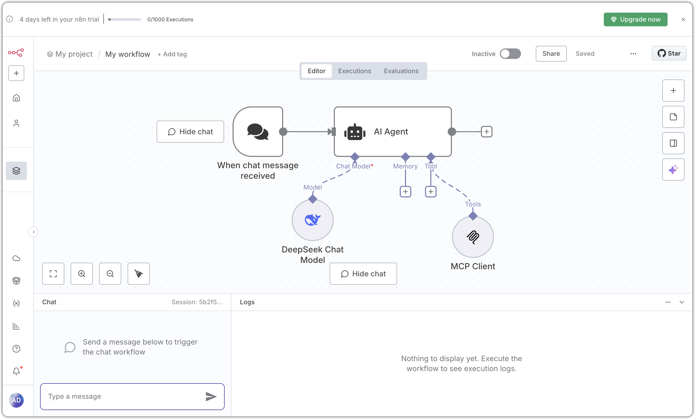
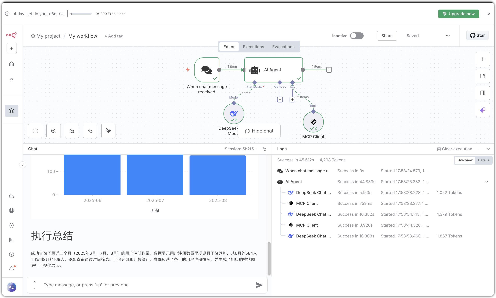